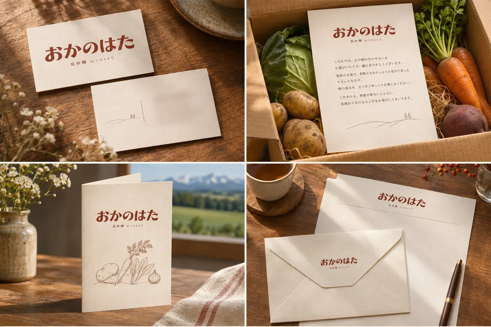
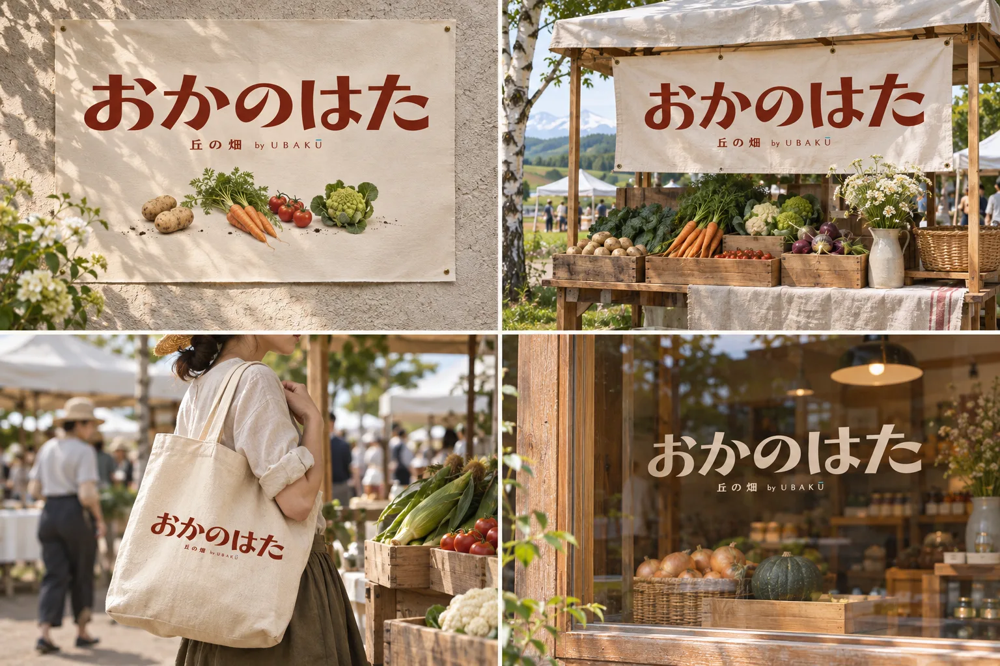
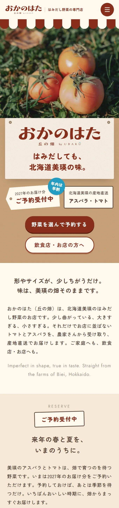

#872F1C赤土
#239CC0空の青
#FEF7ED生成り




Works/03
はみだした野菜に、ひとつの店先を。
北海道美瑛の、はみだし野菜の専門店「おかのはた」のブランド。形やサイズが少しちがうだけで、お店に並ばないアスパラとトマトを、美瑛の農家さんから産地直送で届けます。名前とロゴ、色から、Webサイト、箱やシール、紙ものまでを、ひとつの世界観でそろえました。2026年11月に okanohata.jp を公開。
はみだした野菜を、選びたくなる理由に変えられるだろうか。
はじめは「UBAKU Yasai」という名前で、宿と同じ見た目のサイトをつくっていました。けれど、それでは野菜のお店に見えない。そこで名前から見直し、美瑛の丘に広がる畑から「おかのはた（丘の畑）」と名付けました。UBAKU の事業のひとつであることは、ロゴの下に小さく添えた「by UBAKU」の文字で伝えます。
ロゴは、丸みのある太い文字に。色は、畑の土の赤土、美瑛の空の青、生成りのクリームの3つです。Webサイトは八百屋の店先のように、ひさし、値札、木箱のラベル、丸シールで組み立てました。はみだしていることを隠さず、そのまま伝えられる店にしています。




少しちがうだけで、
おいしさは同じ。
形やサイズのちがいは、畑ではあたりまえのことです。それなのに、お店に並ぶのは、そろった野菜だけ。はみだしていることを弱みにせず、このお店らしさとして見せる。名前もロゴもWebサイトも、そのために考えました。
建物のこと、ブランドのこと、
お聞かせください。
古い建物を生かしたい、宿や店舗に変えたい、お店の見せ方を整えたい。
まだ形になっていない思いつきでも大丈夫です。